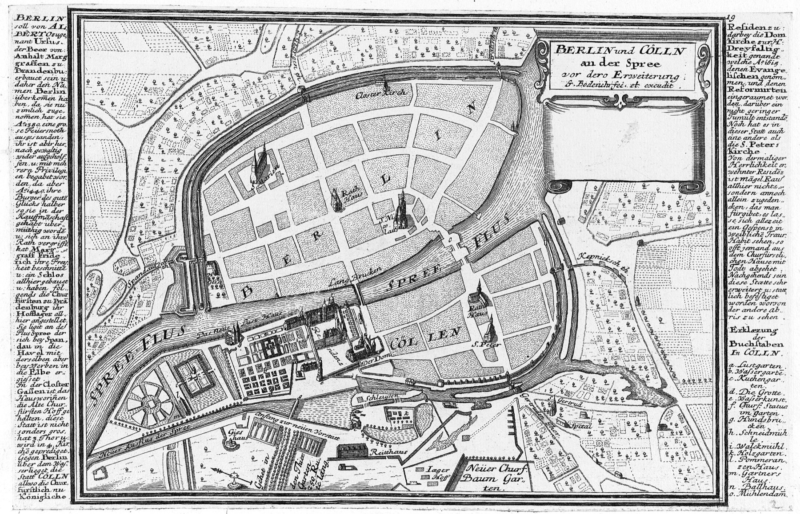

Mühlendammcrossing, tolls, trade
Berlineastern town around today's Nikolaiviertel
CöllnSpree island, the older paper trail
Base map: Johann Gregor Memhardt / Gabriel Bodenehr, Berlin and Cölln, 1652/1720. BerlinWalk overlay.